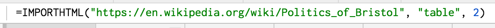
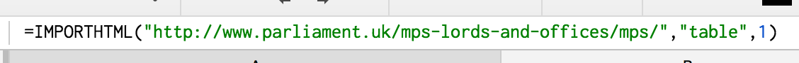

Upload from file: EU Referendum Data
Import from URL: https://raw.githubusercontent.com/leilahaddou/leilahaddou.github.io/master/data-journalism-tutorial/2016-12-greater-manchester-street.csv
Import from a webpage: Manchester Central Wikipedia
1) Open up a new sheet in the workbook and import the first table from this Wikipedia page: Wikipedia

2) See if you can import the following the list of MPs from the parliament website: Parliament.uk
